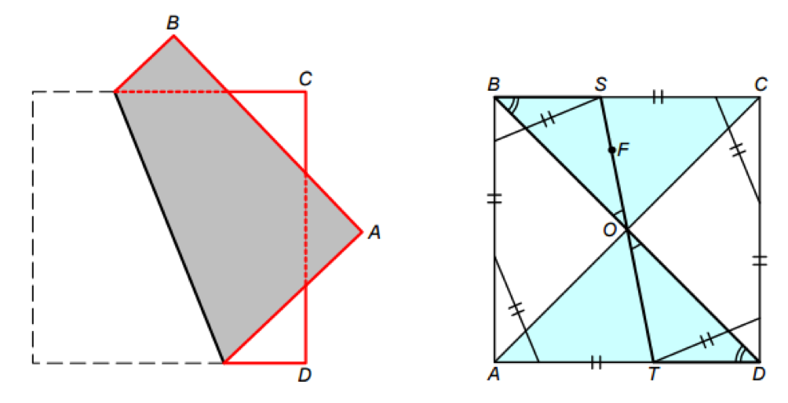

Ben is going to bend a square sheet of paper ABCD. Ben calls the fold beautiful, if the side AB crosses the side CD and the four resulting rectangular triangles are equal. Before that, Jack selects a random point on the sheet F. Find the probability that Ben will be able to make a beautiful fold through the point F.
Let's unfold the beautiful fold $($Fig., Right$)$. Suppose that the diagonal BD and the fold line ST intersect at the point O. The triangles BSO and DTO are identical because of by one equal side and two equal angles. Hence, BO = OD, and therefore O is the center of the square. Thus, the fold line ST passes through the center of the square. Obviously, the reverse is also true - if the fold line passes through the center of the square, the fold will be beautiful.

The point S can occupy any position between B and C, and the point T is located between D and A. Hence, to make a beautiful fold through F, you need the point F to belong to the triangle BOC or the triangle AOD. The area of the figure bounded by these triangles is equal to half the area of the square.
½.